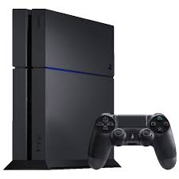
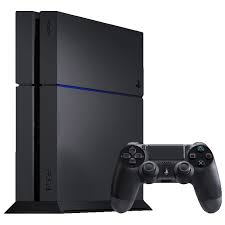

Fundação
A PlayStation foi lançada pela Sony em 1994, inicialmente como um console de CD-ROM para jogos. A ideia surgiu de uma parceria com a Nintendo, que não se concretizou. A Sony decidiu seguir em frente sozinha, e o primeiro PlayStation rapidamente se tornou um sucesso, revolucionando a indústria com gráficos 3D e uma vasta biblioteca de jogos. Isso estabeleceu a Sony como uma das principais forças no mercado de videogames.
Primeiros Lançamentos
Os primeiros lançamentos da PlayStation em 1994 incluíram uma série de jogos que se tornaram clássicos e ajudaram a definir a plataforma. Alguns dos títulos mais notáveis foram: "Ridge Racer" - Um jogo de corrida que destacou os gráficos 3D e se tornou um dos jogos de lançamento mais populares. "Tekken" - Um jogo de luta que apresentou personagens memoráveis e mecânicas de combate inovadoras, contribuindo para o sucesso da franquia. "Final Fantasy VII" - Lançado um pouco depois, em 1997, este RPG é frequentemente citado como um dos melhores jogos de todos os tempos, ajudando a popularizar o gênero no Ocidente. "Metal Gear Solid" - Lançado em 1998, este jogo de ação e espionagem estabeleceu novos padrões para narrativa e jogabilidade.